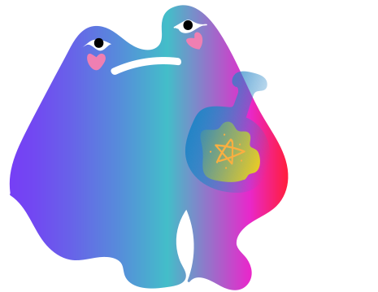
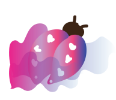
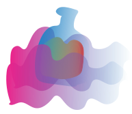
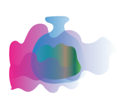

ЛАВКА С МАГИЧЕСКИМИ ЗЕЛЬЯМИ
СНАДОБ'
КУПИТЬ ЗЕЛЬЕ

Жук-навозник
Жук-навозник аппетитное лакомство для лягушки.Не обладает никакими магическими свойствами.

Зелье "Корень"
"Зелье из кореандора с добавлением лягушачих лапок.С помощью него, можно превратить человека в лягушку.

Зелье "Оливка"
"Зелье с анчоуссами с добавлением молока.С помощью него можно превратиться в корову.

Гриб "Ласточка"
Гриб аппетитное лакомство для лосей.Для лягушек оно опасно.Вызывает галюцинацию.

Зелье "Сочный персик"
Зелье с персиком.Облегчает приминение другого зелья, и помогает превратиться обратно в человека.

Мотыльки
Мотыльков нельзя кушать,они слишком милые.